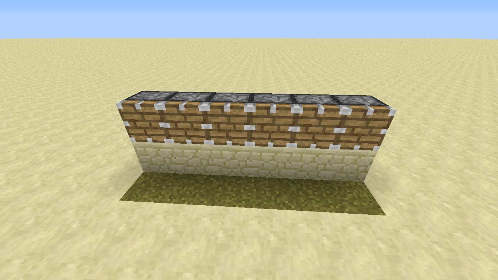
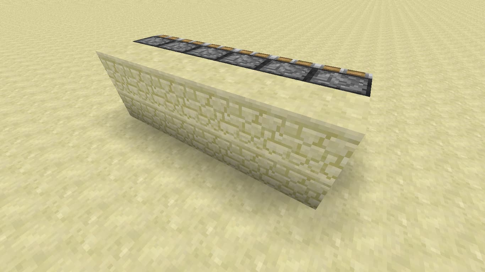
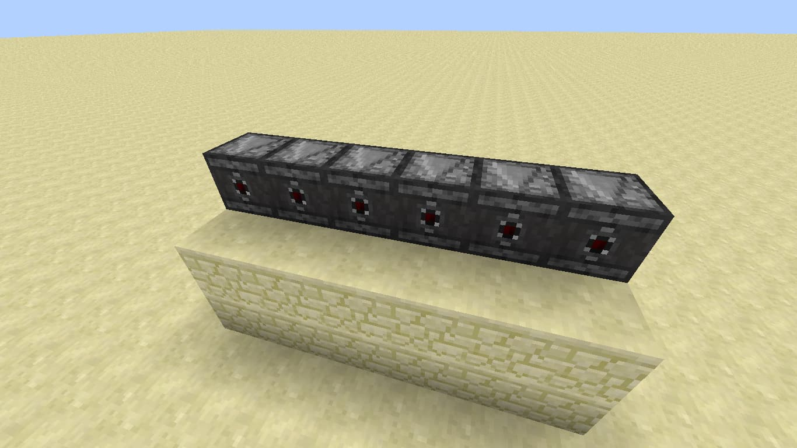
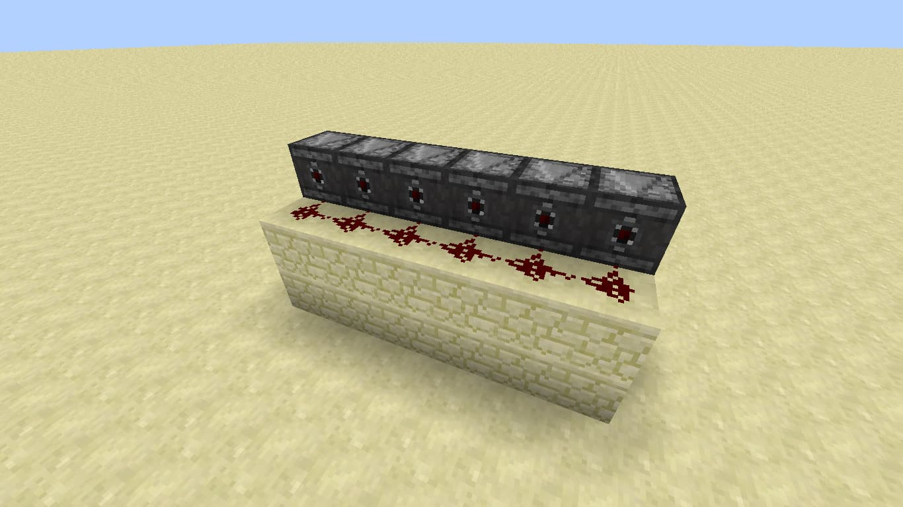
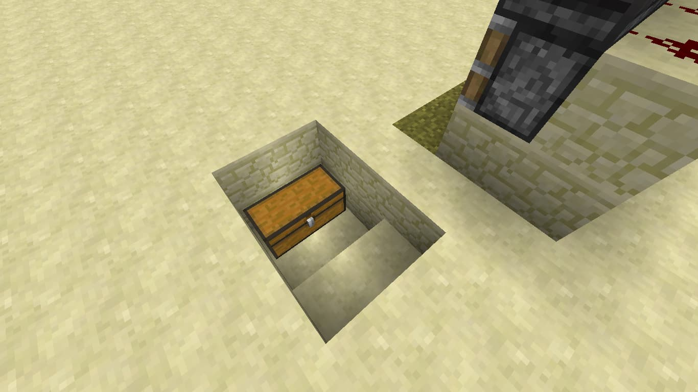
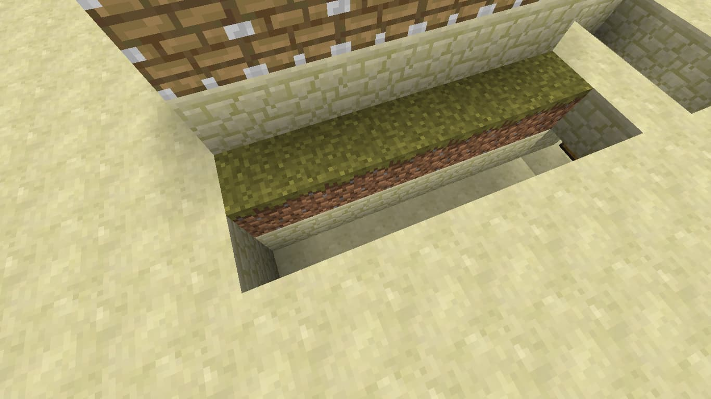
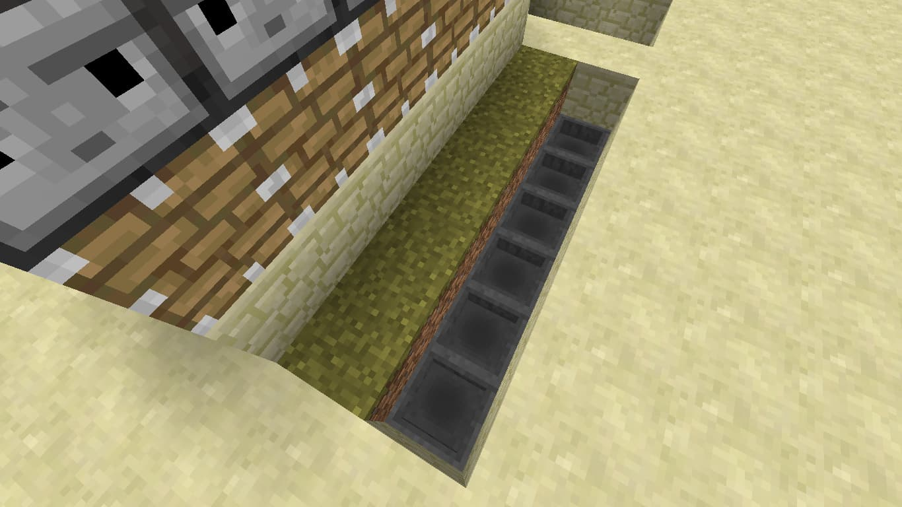

Ферма Тростини
ферма тростини вона вам потрібна для папер з якого ми робимо феєрверки. він вам потрібен для спосібу пересування "елітри"
-

Поставте будь-які блоки перед місцем, куди ви хочете посадити тростину, на них встановіть поршні. (ці блоки потім можна прибрати)
-

Позаду поршнів встановіть блоки.
-

Нагору поршнів встановіть спостерігачі, спрямовані обличчям до ферми.
-

Позаду спостерігачів на блоки встановіть червоний пил.
-

Поруч із фермою встановіть скриню, куди складатиметься вирощена тростина.
-

Прокопайте канаву глибиною в 2 блоки для води та лійок.
-

ставте завантажувальні вирви, спрямовані до скрині
Готово! Тепер можна встановити цукрову тростину і залити канаву водою.